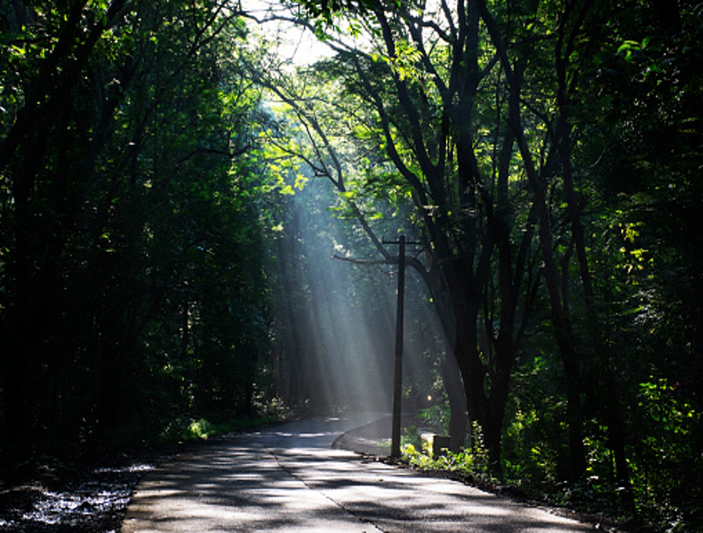
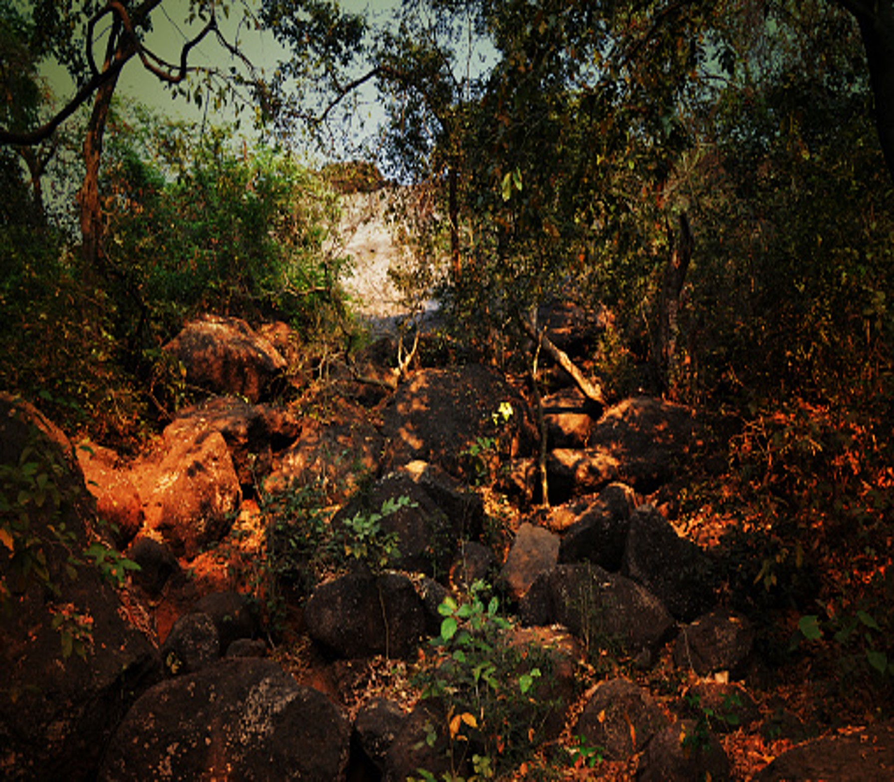

NIC, with its well thought-out displays and captivating models is a gateway to the real treasures of SGNP which are its forests and the myriad life forms that live within. Exhibits here depict different aspects related to wildlife and biodiversity with a stress on the need for their conservation. The quite little garden outside is a haven for butterflies and also is developed as a display for some of our uncommon medicinal plants.The NIC is like a road map to SGNP’s tremendous biodiversity. On the pathway to the center, sits a model representation of the park, beautifully depicting the geographical layout and forming an actual gateway into the urban wilderness of SGNP. The center is a mix of illustrations, models and photographs, interactive media all coming together to inspire, educate and inform, not just aspects of the biodiversity but also the factors that threaten it.
Timing : All the activities (except Gandhi Tekdi & Kanheri Caves) are closed on Mondays & during lunch hour (1:30pm - 2:30pm).

